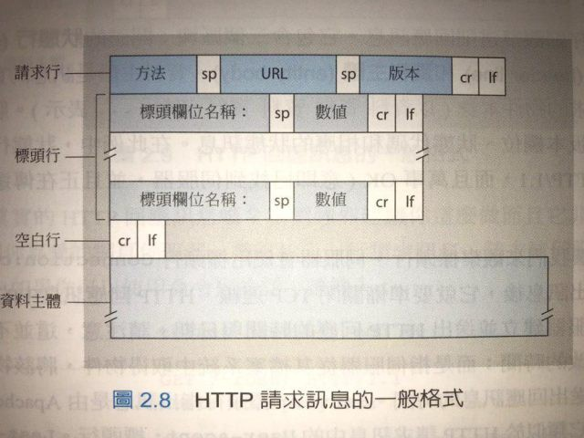
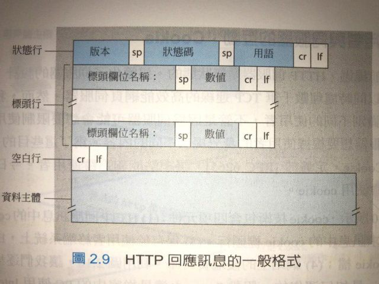

HTTP Request

一个HTTP请求由三个部分组成：
- start line;
- http headers;
- body
start line
HTTP 的 start line 用于标识客户端想要服务器执行的某个动作，例如是 GET 某个数据，还是上传某个数据，其有三个要素组成：
HTTP Method | 空白 | URL | 空白 | 版本 | CRLF(換行)
HTTP Method
该 HTTP 请求所要执行的动作，主要有以下几类：
- GET(需要大写）： 从服务端获取指定的资源，可以是一个文档，一张图片，一个视频等
- PUT：创建一个新的资源或者用新的数据取代目标资源
- POST：提交某个资源，例如对已存在的资源进行注释；提交一个表单；发布消息到新闻组，邮件列表等；通过附加操作扩展一个数据库
- DELETE：删除某个特定的资源
- TRACE：用于发起一个远端的回环(loop-back)的消息请求
- CONNECT：用于建立一个到服务端的网络隧道(tunnel)
- HEAD：请求一个与GET命令请求相同的response,但是不包含消息主体(body)
- OPTIONS：为目标资源描述会话的可选项，请求资源的URL, URL在不同的情况下可以是：绝对路径，通常后面会有一个 ? 以及一个查询字符串，一般与GET,POST，HEAD以及OPTIONS搭配使用
例如以下：
POST / HTTP/1.1
GET /background.png HTTP/1.0
HEAD /test.html?query=alibaba HTTP/1.1
OPTIONS /anypage.html HTTP/1.0
GET http://developer.mozilla.org/en-US/docs/Web/HTTP/Messages HTTP/1.1
HTTP 版本号
用于告知服务端接收请求响应时所期望的 HTTP 版本
HTTP Headers
HTTP头用于客户端向服务端发送关于请求或者响应的额外信息，比如字符的编码方式，语言等，这些信息可以分成如下三个部分：
- 一般性头信息(General Header): 对于请求与响应都适用;
- 请求头信息(Request Header): 关于HTTP请求的附加信息
- 实体头信息(Entity Header): 适用于请求主体(body)的附加信息
HTTP Header and Request Body 中間會有個換行 CRLF (carriage return followed by line feed)
Request Body(資料主體)
通常情况下，HTTP请求不包主体，除非客户端有数据需要更新到服务器上，此时一般由HTTP头Content-Length,Content-Type来确定消息体的数据类型以及长度。
如果使用 GET 方法，資料主體就會是空白
HTTP Response

与HTTP请求相类似，HTTP响应也有三部分组成：
- Status line
- Header
- body
Status line
状态行主要包括HTTP协议版本、状态码以及状态码描述字符串组成。例如以下：
- HTTP/1.1 404 NOT FOUND
Headers
响应的头跟请求的头信息有相同的结构（可参考上节关于请求头信息的描述），也包含了三个类型的头信息
- General Headers：适用于整个消息
- Response Headers：描述有关服务端的信息
- Entity Headers：适用于消息主体部分
body
并不是所有的HTTP响应都有主体部分，像204，201状态码对应的响应就不需要。
最后一部分，我们来看下服务端响应客户端请求后返回的状态码以及具体的含义。
status code
HTTP的状态码是一个3位数表示，其作用是告知客户端如何解析服务端的响应，共有5种类型的状态码：
1xx: informational (訊息)
服务端告知客户端继续或者执行某个操作：
- 100： continue, 表示客户端可以继续发送HTTP请求
- 101： switching protocols, 切换协议
2xx: Successful (成功)
这类状态码用于告知客户端，服务端已经成功收到并处理了HTTP请求：
- 200： OK, 请求成功
- 202： Accepted, 请求已经被接收到，但是尚未完成处理
3xx: Redirection (重新導向)
重定向：需要用户的做进一步的操作，通常需要跳至一个不同的URL去获取资源
- 301： moved permanently, 资源已经更换到一个新的URL
- 303: see other, 需要通过另外一个URL来获取资源
4xx: Client error (用戶端錯誤)
服务端认为客户端出错时发送此状态码，如访问一个无效的资源或者请求有误：
- 400： bad reqeust, 请求有误
- 401: unauthorized, 请求需要验证
- 403： forbidden, 服务器拒绝访问资源
- 404: Not found, 请求的资源不存在
5xx: Server error (伺服器錯誤)
此类状态码表示服务器处理请求时出现了错误：
- 500： internal server error, 服务器自身出错
- 501： not implemented, 服务器尚未实现该请求
- 503： service unavailable, 服务不用，如服务故障或者过载
- Post title：【HTTP】HTTP 協定
- Post author：Neil Yang
- Create time：2019-06-28 00:00:00
- Post link：https://des86532.github.io/2019/06/28/Http/http/
- Copyright Notice：All articles in this blog are licensed under BY-NC-SA unless stating additionally.